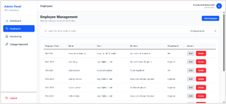

01
Hybrid Workforce Attendance Platform
Microservices-based web platform for employee attendance tracking and workforce monitoring.

Overview
Developed a microservices-based attendance management platform to support hybrid work environments. The application captures attendance timestamps, allows photo evidence upload during check-in, and provides HR administrators with centralized workforce monitoring.
My Contributions
- Designed the overall system architecture using a microservices approach.
- Developed responsive user interfaces with React.js.
- Developed RESTful APIs using NestJS for authentication, attendance, and employee management.
- Implemented secure login and role-based access control.
- Developed attendance submission with automatic date/time capture and photo upload.
- Designed and implemented MySQL database schemas.
Highlights
Microservices architecture
Photo verification
HR dashboard
RESTful APIs